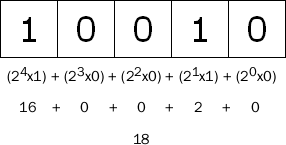

ECMAScript 位运算符
位运算符是在数字底层（即表示数字的32 个数位）进行操作的。
目录 |
重温整数
ECMAScript 整数有两种类型，即有符号整数（允许用正数和负数）和无符号整数（只允许用正数）。在ECMAScript 中，所有整数字面量默认都是有符号整数，这意味着什么呢？
有符号整数使用31 位表示整数的数值，用第32 位表示整数的符号，0 表示正数，1 表示负数。数值范围从-2147483648 到2147483647。
可以以两种不同的方式存储二进制形式的有符号整数，一种用于存储正数，一种用于存储负数。正数是以真二进制形式存储的，前31位中的每一位都表示2的幂，从第1位（位0）开始，表示2 0，第2位（位1）表示2 1。没用到的位用0填充，即忽略不计。例如，下图展示的是数18的表示法。

18 的二进制版本只用了前5 位，它们是这个数字的有效位。把数字转换成二进制字符串，就能看到有效位：
var iNum = 18; trace(iNum.toString(2)); /*输出"10010"*/
这段代码只输出"10010"，而不是18 的32 位表示。其他的数位并不重要，因为仅使用前5 位即可确定这个十进制数值。如下图所示：
- 
负数也存储为二进制代码，不过采用的形式是二进制补码。计算数字二进制补码的步骤有三步：
- 确定该数字的非负版本的二进制表示（例如，要计算-18的二进制补码，首先要确定18 的二进制表示）
- 求得二进制反码，即要把0 替换为1，把1 替换为 0
- 在二进制反码上加 1
要确定-18 的二进制表示，首先必须得到18 的二进制表示，如下所示：
0000 0000 0000 0000 0000 0000 0001 0010
接下来，计算二进制反码，如下所示：
1111 1111 1111 1111 1111 1111 1110 1101
最后，在二进制反码上加1，如下所示：
1111 1111 1111 1111 1111 1111 1110 1101 1 --------------------------------------- 1111 1111 1111 1111 1111 1111 1110 1110
因此，-18 的二进制表示即1111 1111 1111 1111 1111 1111 1110 1110。记住，在处理有符号整数时，开发者不能访问31 位。
有趣的是，把负整数转换成二进制字符串后，ECMAScript 并不以二进制补码的形式显示，而是用数字绝对值的标准二进制代码前面加负号的形式输出。例如：
var iNum = -18; alert(iNum.toString(2)); //输出"-10010"
这段代码输出的是"-10010"，而非二进制补码，这是为避免访问位31。为了简便，ECMAScript 用一种简单的方式处理整数，使得开发者不必关心它们的用法。
另一方面，无符号整数把最后一位作为另一个数位处理。在这种模式中，第32位不表示数字的符号，而是值2 31。由于这个额外的位，无符号整数的数值范围为0到4294967295。对于小于2147483647的整数来说，无符号整数看来与有符号整数一样，而大于2147483647的整数则要使用位31（在有符号整数中，这一位总是0）。
把无符号整数转换成字符串后，只返回它们的有效位。
注意：所有整数字面量都默认存储为有符号整数。只有ECMAScript的位运算符才能创建无符号整数。
位运算NOT
位运算NOT 由否定号（~）表示，它是ECMAScript 中为数不多的与二进制算术有关的运算符之一。
位运算NOT 是三步的处理过程：
- 把运算数转换成32 位数字
- 把二进制数转换成它的二进制反码
- 把二进制数转换成浮点数
例如：
var iNum1 = 25; /*25等于00000000000000000000000000011001 */ var iNum2 = ~iNum1; /*转换为11111111111111111111111111100110 */ trace(iNum2); /*输出"-26"*/
位运算NOT 实质上是对数字求负，然后减1，因此25 变-26。用下面的方法也可以得到同样的方法：
var iNum1 = 25; var iNum2 = -iNum1 -1; trace(iNum2); /*输出-26*/
位运算AND
位运算AND 由和号（&）表示，直接对数字的二进制形式进行运算。它把每个数字中的数位对齐，然后用下面的规则对同一位置上的两个数位进行AND 运算：
| 第一个数字中的数位 | 第二个数字中的数位 | 结果 |
|---|---|---|
| 1 | 1 | 1 |
| 1 | 0 | 0 |
| 0 | 1 | 0 |
| 0 | 0 | 0 |
例如，要对数字25 和3 进行AND 运算，代码如下所示：
var iResult = 25 & 3; alert(iResult); //输出"1"
25 和3 进行AND 运算的结果是1。为什么？分析如下：
25 = 0000 0000 0000 0000 0000 0000 0001 1001 3 = 0000 0000 0000 0000 0000 0000 0000 0011 ------------------------------ --------------- AND = 0000 0000 0000 0000 0000 0000 0000 0001
可以看出，在25 和3 中，只有一个数位（位0）存放的都是1，因此，其他数位生成的都是0，所以结果为1。
位运算OR
位运算OR 由符号（|）表示，也是直接对数字的二进制形式进行运算。在计算每位时，OR 运算符采用下列规则：
| 第一个数字中的数位 | 第二个数字中的数位 | 结果 |
|---|---|---|
| 1 | 1 | 1 |
| 1 | 0 | 1 |
| 0 | 1 | 1 |
| 0 | 0 | 0 |
仍然使用AND 运算符所用的例子，对25 和3 进行OR 运算，代码如下：
var iResult = 25 | 3; alert(iResult); //输出"27"
25 和3 进行OR 运算的结果是27：
25 = 0000 0000 0000 0000 0000 0000 0001 1001 3 = 0000 0000 0000 0000 0000 0000 0000 0011 ------------------------------ -------------- OR = 0000 0000 0000 0000 0000 0000 0001 1011
可以看出，在两个数字中，共有4 个数位存放的是1，这些数位被传递给结果。二进制代码11011 等于27。
位运算XOR
位运算XOR 由符号（^）表示，当然，也是直接对二进制形式进行运算。XOR 不同于OR，当只有一个数位存放的是1 时，它才返回1。真值表如下：
| 第一个数字中的数位 | 第二个数字中的数位 | 结果 |
|---|---|---|
| 1 | 1 | 0 |
| 1 | 0 | 1 |
| 0 | 1 | 1 |
| 0 | 0 | 0 |
对25 和3 进行XOR 运算，代码如下：
var iResult = 25 ^ 3; alert(iResult); //输出"26"
25 和3 进行XOR 运算的结果是26：
25 = 0000 0000 0000 0000 0000 0000 0001 1001 3 = 0000 0000 0000 0000 0000 0000 0000 0011 ------------------------------ --------------- XOR = 0000 0000 0000 0000 0000 0000 0001 1010
可以看出，在两个数字中，共有4 个数位存放的是1，这些数位被传递给结果。二进制代码11010 等于26。
左移运算
左移运算由两个小于号表示（<<）。它把数字中的所有数位向左移动指定的数量。例如，把数字2（等于二进制中的10）左移5 位，结果为64（等于二进制中的1000000）：
var iOld = 2; /*等于二进制10 */ var iNew = iOld << 5; /*等于二进制1000000十进制64*/
注意：在左移数位时，数字右边多出5个空位。左移运算用0填充这些空位，使结果成为完整的32位数字。

注意：左移运算保留数字的符号位。例如，如果把-2左移5位，得到的是-64，而不是64。“符号仍然存储在第32位中吗？”是的，不过这在ECMAScript后台进行，开发者不能直接访问第32个数位。即使输出二进制字符串形式的负数，显示的也是负号形式（例如，-2将显示-10。）
有符号右移运算
有符号右移运算符由两个大于号表示（>>）。它把32 位数字中的所有数位整体右移，同时保留该数的符号（正号或负号）。有符号右移运算符恰好与左移运算相反。例如，把64 右移5 位，将变为2：
var iOld = 64; /*等于二进制1000000 */ var iNew = iOld >> 5; /*等于二进制10十进制2*/
同样，移动数位后会造成空位。这次，空位位于数字的左侧，但位于符号位之后。ECMAScript 用符号位的值填充这些空位，创建完整的数字，如下图所示：

无符号右移运算
无符号右移运算符由三个大于号（>>>）表示，它将无符号32 位数的所有数位整体右移。对于正数，无符号右移运算的结果与有符号右移运算一样。
用有符号右移运算中的例子，把64 右移5 位，将变为2：
var iOld = 64; //等于二进制1000000 var iNew = iOld >>> 5; //等于二进制10十进制2
对于负数，情况就不同了。
无符号右移运算用0 填充所有空位。对于正数，这与有符号右移运算的操作一样，而负数则被作为正数来处理。
由于无符号右移运算的结果是一个32 位的正数，所以负数的无符号右移运算得到的总是一个非常大的数字。例如，如果把-64 右移5 位，将得到134217726。如果得到这种结果的呢？
要实现这一点，需要把这个数字转换成无符号的等价形式（尽管该数字本身还是有符号的），可以通过以下代码获得这种形式：
var iUnsigned64 = -64 >>> 0;
然后，用Number 类型的toString() 获取它的真正的位表示，采用的基为2：
alert(iUnsigned64.toString(2));
这将生成11111111111111111111111111000000，即有符号整数-64 的二进制补码表示，不过它等于无符号整数4294967232。
出于这种原因，使用无符号右移运算符要小心。